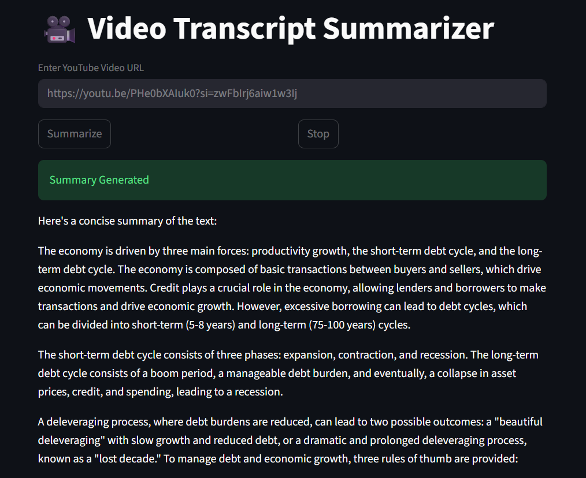

Projects
🚀 AI Travel Itinerary Generator

Overview:
AI-powered full-stack web application that generates personalized,
structured travel itineraries based on user preferences such as
destination, budget, interests, duration, and travel style.
Problem:
Manual travel planning is time-consuming and often results in
generic or impractical itineraries.
Solution:
Automated itinerary generation using structured prompt engineering,
RESTful APIs, and real-time LLM responses.
- User-driven, preference-based itinerary generation
- Day-wise structured output
- Deterministic LLM responses using prompt templates
- Server-side rendered dynamic UI
- Scalable, modular backend architecture
Tech Stack: HTML, CSS, JavaScript, FastAPI, Jinja2, LLMs (OpenAI / Ollama)
🎥 Video Transcript Summarizer

Overview:
End-to-end AI application that extracts YouTube transcripts and
generates concise summaries using a fault-tolerant processing pipeline.
Problem:
Many videos lack accurate transcripts, making content summarization
slow and unreliable.
Solution:
A multi-stage pipeline using fallback strategies and low-latency LLMs
to ensure reliable transcript extraction and summarization.
- Automatic transcript extraction
- Audio-based fallback using yt-dlp
- Fast speech-to-text using Whisper
- Low-latency summarization using LLaMA-3
- Robust error handling across stages
Tech Stack: Python, Streamlit, yt-dlp, youtube-transcript-api, Groq Whisper, Groq LLaMA-3